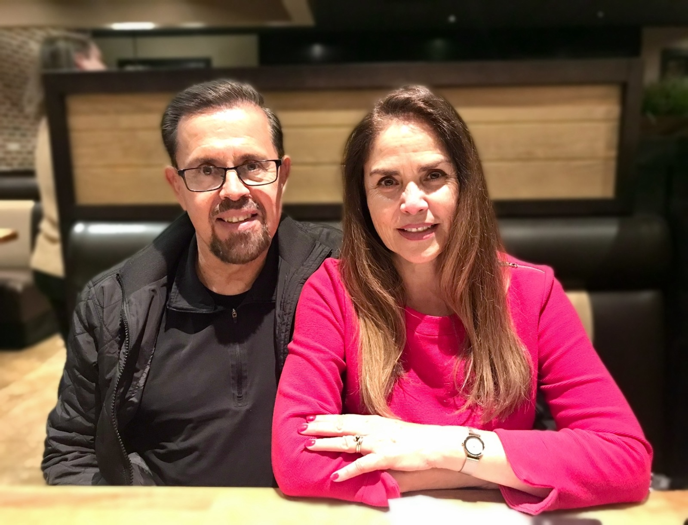

Twelve years of faithful ministry, from a small mission in Juárez to the nations of the earth.
My wife Marcela and I have been doing ministerial work in Juárez, Mexico for twelve years. We took over a small mission established by a missionary friend of ours, whom Marcela had worked alongside for nearly nineteen years before our marriage. We began reaching out to the children in the neighborhood, and soon we had a growing children's ministry. Then some of the parents began to attend, and after a couple of years we started holding Sunday services.
In 2020, God clearly instructed us to attend Bible school in Florida. We left the ministry in the hands of trusted leaders who had been with us for several years. The season was life-changing and launched us into a lifestyle of evangelism as a day-to-day occurrence.
In 2022, God opened the doors for us to begin traveling to do evangelism in other nations. Since then we have ministered in Guatemala, Brazil, Chiapas, Tijuana, England, Scotland, and of course Juárez, Mexico. Literally thousands of souls have been won for Christ.
God began to speak to us about our calling to raise up a "new breed" of ministers who are anointed, bold, and uncompromising in their desire to bring in the harvest of souls. To achieve that, God has asked us to establish a local church and Bible university in Juárez. The synergy between the two is dynamic and beneficial. The church has relaunched, is fully operational, and is growing. The Bible school is in the planning stage and should open within a couple of years.
We are presently building our ministry headquarters in Juárez. Construction has commenced on phase one of five total phases.
To fulfill Jesus' Great Commission by preaching the Gospel, making disciples, and ministering healing to the sick. Every Christian is commissioned to share the Gospel, disciple others, and demonstrate the love and power of Christ through a life of faithful ministry.
In five years we will have won 100,000 souls for Christ, with our headquarters and church fully built and staffed, 600+ church members, a Bible school averaging 200 students, weekly local evangelism, and three annual global outreaches staffed by members and students.

Gilbert Torres serves as Founder, Evangelist, and Pastor of River Ministries International. Alongside his wife Marcela, he has given his life to the harvest, from the streets of Juárez to crusades across the nations, with a heart to make true disciples and equip every believer for the work of the ministry.
Invite Us to MinisterPartner prayerfully and financially to send the Gospel where it has not yet been heard.
Partner With Us